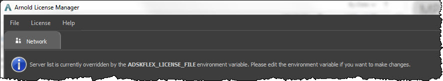
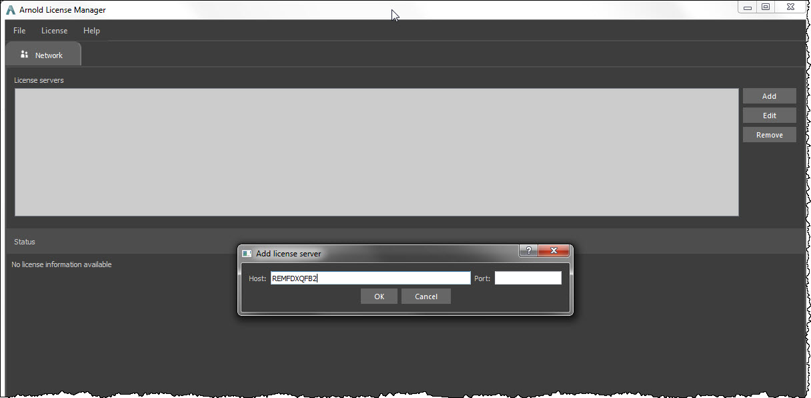
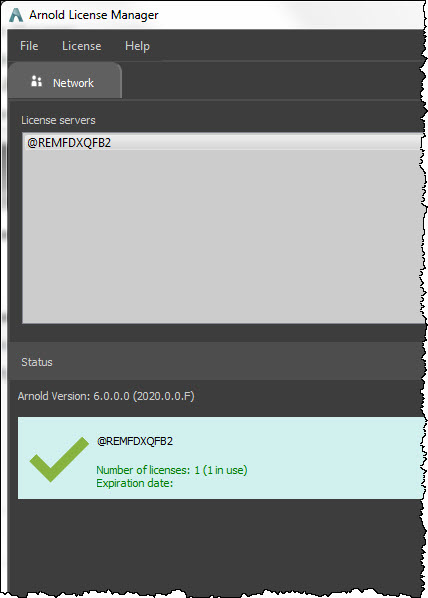

如果订购 Arnold 单（人）用户固定期限使用许可，只需使用 Autodesk ID 即可登录。 如何知道您是否订购了单（人）用户固定期限使用许可？
如果您使用 Maya 或 3ds Max，则可以在这些应用程序中进行登录，但仍需要使用 Arnold License Manager 注册 Arnold 以获取单（人）用户许可。
此外，根据您是否还使用网络/浮动/多（人）用户许可，可能需要转换至单（人）用户许可。
打开 Arnold License Manager（在 Arnold 插件的 Arnold 菜单中，单击“许可 > Arnold License Manager”(Licensing > Arnold License Manager)）。
如果未显示“单（人）用户”(Single-user)选项卡，请单击“许可 > 转换至单（人）用户许可”(License > Switch to Single-user Licensing)
如果出现提示，请根据提示安装单（人）用户许可并注册 Arnold。
（注意：您需要管理员权限才能安装许可服务并注册 Arnold）
单击“登录”(Sign In)，然后输入您的 Autodesk ID 和密码。
您将看到单（人）用户许可的状态。祝您获得愉快的渲染体验！
如果您拥有网络许可，则可以使用 Arnold License Manager 连接到网络许可服务器。
打开 Arnold License Manager。
如果需要，请单击“许可”(License)，然后单击“网络”(Network)（如果您拥有来自 Autodesk 的 1 年期固定期限使用许可）或“RLM”（如果您拥有月度网络许可）。
如果显示“服务器列表当前已覆盖”(Server list is currently overridden)消息，这意味着已设置 ADSKFLEX_LICENSE_FILE 环境变量，且 Arnold 使用 ADSKFLEX_LICENSE_FILE 连接到许可服务器。
如果要使用 Arnold License Manager 连接到许可服务器，则需要从系统中清除 ADSKFLEX_LICENSE_FILE。

单击“添加”(Add)
在“添加许可服务器”(Add License Server)对话框中，在“主机”(Host)文本框中键入许可服务器的名称或 IP 地址。
您不必在名称前添加 @ 符号（但如果您这样做，也可以）。
可以将“端口”(Port)留空，除非要求您使用特定端口号（例如，如果您的 IT 团队使用特定端口通过防火墙）。

单击“确定”(OK)，您将看到单（人）用户许可的状态。祝您获得愉快的渲染体验！

打开 Arnold License Manager（在 Arnold 插件的 Arnold 菜单中，单击“许可 > Arnold License Manager”(Licensing > Arnold License Manager)）。
在 Arnold License Manager 中，单击“文件 > 诊断”(File > Diagnostics)。
在“许可诊断”(License Diagnostics)中：
打开 Arnold License Manager（在 Arnold 插件的 Arnold 菜单中，单击“许可 > Arnold License Manager”(Licensing > Arnold License Manager)）。
在 Arnold License Manager 中，单击“文件 > 诊断”(File > Diagnostics)。
向下滚动并找到 rlmutil rlmhostid 信息，如下所示：
rlmutil rlmhostid -q ether (1.38 sec)
==============================
1833da020992 020335733b80 00ee56c00001 005ff6cdd008 使用列表中的第一个 MAC 地址。